Markus Guide: Rework & Builds for Hero Wars Alliance
- By: Alexandre Domingos. .
Markus has finally stepped into the role his shield always suggested: a tank. His rework brings Strength scaling, physical damage, emergency healing, and a spirit that keeps protecting allies after he falls. But does that make him worth your resources? I would start with what he actually helps your team survive.
For me, Ascension is the most interesting change. Markus now turns his maximum Health into a damage-absorption reserve for his allies. In this guide, I will walk you through his skills, compare Compassion and Salvation, and explain where I would spend skin stones, glyph resources, and artifact materials first.
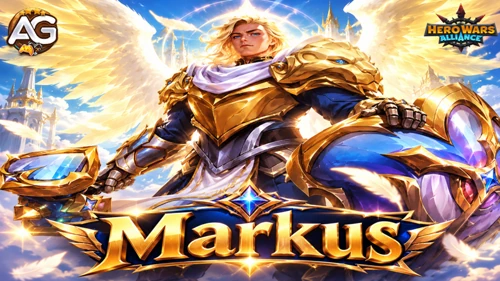
Markus Table of Contents
- Who Is Markus?
- What Changed in the Rework?
- Ratings, Pros and Cons
- Talisman Max Stats Comparison
- Which Talisman Should You Equip?
- Skills and Upgrade Priorities
- Tank Class Ability
- Best Skins and Skin Order
- Artifact Priority
- Glyph Priority
- How to Counter Markus
- Markus Synergy
- Team Ideas for 2026
- Alexandre's Final Verdict
Who Is Markus in Hero Wars Alliance?
Markus is a Way of Honor tank who combines frontline protection with healing. His job is to buy time for allies to win the fight, with a final layer of protection after his own defeat.
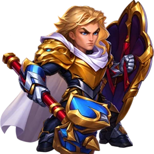
- Main Class: Tank
- Position: Front Line
- Main Stat: Strength
- Faction: Way of Honor
- Core Role: Protection, healing, and damage absorption
- Synergy to Explore: Luther, with Markus covering the frontline after Luther jumps
Think of him as a support tank: his personal damage helps, but his strongest contribution is keeping a vulnerable teammate alive. Soul Stone acquisition and a Hydra tier are not rated in this guide.
Markus Rework: From Healer to Tank
- New class and main stat: Markus becomes a Tank with Strength as his main stat, and his third artifact becomes the Ring of Strength.
- New glyph lineup: Physical Attack, Health, Armor, Magic Defense, and Strength.
- Updated skins: Default grants Strength; Winter and Stellar grant Physical Attack. All his skins use Strength Skin Stones.
- Revised talismans: Compassion grants Strength and Armor; Salvation grants Magic Defense and Physical Attack.
- Reworked skills: Physical Attack scales his ultimate heal and damage. Retribution Ray heals from the recipient's maximum Health, while Ascension scales its absorption reserve from Markus's own Health.
- Equipment changes: Existing upgrade progress is preserved through the rework.
This build covers the reworked base skills, with no relic upgrades or Skin+ bonuses. No Realm skill upgrades are included.
▶️Video: I Tested Markus’s Rework - Is He Worth Your Resources?

Markus Talisman Max Stats Comparison
These are separate builds with one talisman equipped at a time. Higher values are bold. Configuration: level 120, six stars, rank 16 with all current-rank gear, level 60 skins, level 80 glyphs, level 100 six-star artifacts, Gift of the Elements level 30, nine class rune upgrades, class ability level 45, overall class level 585, and a level 50 talisman with maximum rerolls. Kits, research, relic upgrades, temporary combat effects, and the weapon activation buff are excluded.
| Stat | 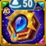 Compassion | 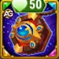 Salvation |
|---|---|---|
Total Power | 228,622 | 228,192 |
| 17,684 | 15,684 | |
| 3,674 | 3,674 | |
| 3,860 | 3,860 | |
| 1,254,990 | 1,174,990 | |
| 68,321 | 79,521 | |
| 26,686 | 26,686 | |
| 76,686 | 52,926 | |
| 36,696 | 50,796 | |
| 0 | 0 | |
| 0 | 0 | |
| 0 | 0 | |
| 0 | 0 | |
| 0 | 0 | |
| 0 | 0 | |
| 5,353 | 5,353 | |
| 0 | 0 | |
| 0 | 0 |
Markus Talisman Guide: Compassion or Salvation?
My default tank choice is the Talisman of Compassion. It improves both Markus's frontline durability and the Health-based protection he provides after death. I would switch to Salvation when I need a stronger emergency heal, more physical skill damage, or additional Magic Defense.
Only the equipped talisman grants its bonuses. Skin bonuses remain active when you change appearance; talisman bonuses do not stack this way. Treat the three reroll slots as one combined bonus. See the talisman guide for equipping and reroll basics; the comparison here uses Markus's reworked attributes.
1 — Talisman of Compassion
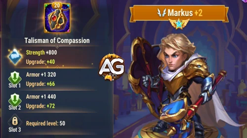
Talisman of Compassion Bonus | Maximum value |
|---|---|
| +2,000 | |
| +23,760 |
The fixed Strength +2,000 adds 80,000 Health and 2,000 Physical Attack. The combined reroll bonus is Armor +23,760 (3 × 7,920). Relative to Salvation, the finished build has 80,000 more Health and 23,760 more Armor.
That extra Health raises Ascension's absorption reserve by 40,000 and the Tank class defensive bonus by 800. This is my starting point when Markus must hold the line against physical pressure.
2 — Talisman of Salvation
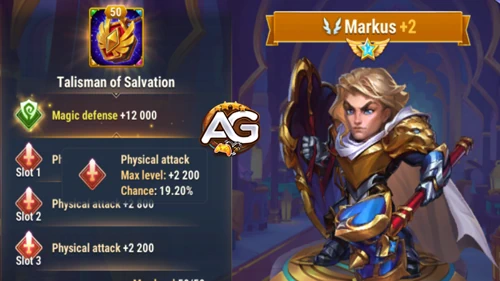
Talisman of Salvation Bonus | Maximum value |
|---|---|
| +14,100 | |
| +13,200 |
The fixed bonus is Magic Defense +14,100, with a combined reroll bonus of Physical Attack +13,200 (3 × 4,400). Compared with Compassion, the final build gains 11,200 Physical Attack, because swapping also removes Compassion's 2,000 Strength-derived attack.
Salvation adds 16,800 to Divine Protection's heal, 8,400 to Retribution Ray's raw damage, and 11,200 to Compassion's raw damage. It does not increase Retribution Ray's 20% heal or the stun's three-second duration. Choose it when those stronger casts and higher Magic Defense matter more than the lost Health and Armor.
Alexandre Tips: I use Salvation in the two team ideas below to emphasize healing and physical skill output. If Markus collapses before he can protect the team, test Compassion first. A larger attack number is useful only if the team survives long enough to benefit.
Markus Skills and Upgrade Priority
Understand Markus's four reworked skills, compare both talisman formulas, and focus upgrades on the healing and protection your team needs most.
Skills stay in their in-game order. The upgrade labels are my investment priorities. Calculations use the maximum builds above and exclude temporary buffs; physical damage values are before enemy mitigation. The formulas do not provide a per-level growth schedule, so these priorities describe battle value rather than an exact return for every skill point.
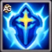
1 — Divine Protection
In-game description: Markus heals the ally with the lowest Health and grants them immunity to all damage for 5 seconds.

Skill Explanation: This is the emergency save. The lowest-Health ally receives a heal and five seconds of immunity to all damage. Physical Attack increases the healing amount, not the immunity duration. Protection from damage should not be read as immunity to every control effect.
Formula with Talisman of Compassion
- Healing: 150% Phys.atk. + 18000 (68,321 × 1.5 + 18,000 = 120,481.5).
Formula with Talisman of Salvation
- Healing: 150% Phys.atk. + 18000 (79,521 × 1.5 + 18,000 = 137,281.5).
Skill Animation Info
- Skill level: 120
- Animation Delay: 0.85 seconds
- Duration: 5 seconds
- Range: 375
- Type: Ultimate, Heal, Damage Immunity
Upgrade Priority: Very High — His main emergency heal and damage-immunity window can prevent a decisive loss. Keep the skill upgraded, while remembering that the listed five-second immunity is not an attack-scaling effect.
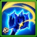
2 — Retribution Ray
In-game description: Markus damages enemies and heals allies in front of him and behind him. Healing restores 20% of the ally's maximum Health.
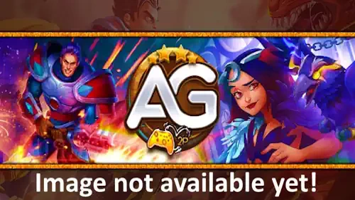
Skill Explanation: The ray damages enemies and heals affected allies in front of and behind Markus. Its damage scales with his Physical Attack, but its healing scales with each recipient's maximum Health. A larger attack stat therefore does not make this percentage heal stronger.
Formula with Talisman of Compassion
- Physical damage: 75% Phys.atk. + 9000 (68,321 × 0.75 + 9,000 = 60,240.75).
- Healing: 20% of the ally's maximum Health. For an illustrative ally with 1,000,000 maximum Health: (0.20 × 1,000,000 = 200,000). The recipient determines this number, so it is not a fixed Markus build stat.
Formula with Talisman of Salvation
- Physical damage: 75% Phys.atk. + 9000 (79,521 × 0.75 + 9,000 = 68,640.75).
- Healing: 20% of the ally's maximum Health. For an illustrative ally with 1,000,000 maximum Health: (0.20 × 1,000,000 = 200,000). The recipient determines this number, so it is not a fixed Markus build stat.
Skill Animation Info
- Skill level: 120
- Initial Cooldown: 9 seconds
- Cooldown: 12 seconds
- Animation Delay: 1 seconds
- Range: 375
- Type: Physical Damage, Heal
Upgrade Priority: High — It combines repeatable healing with damage. The 20% heal makes it useful even when Markus is built defensively; do not spend attack resources expecting them to scale this part.
3 — Compassion
In-game description: Deals physical damage to the nearest enemies in front of Markus and stuns them for 3 seconds.

Skill Explanation: This is his close-range interruption. The nearest enemies in front take physical damage and are stunned for three seconds. Positioning matters: range 100 makes it much more local than the ray's range 375. More attack increases the damage, not the listed stun duration.
Formula with Talisman of Compassion
- Physical damage: 100% Phys.atk. + 12000 (68,321 × 1 + 12,000 = 80,321).
Formula with Talisman of Salvation
- Physical damage: 100% Phys.atk. + 12000 (79,521 × 1 + 12,000 = 91,521).
Skill Animation Info
- Skill level: 100
- Cooldown: 12 seconds
- Animation Delay: 0.7 seconds
- Stun Duration: 3 seconds
- Range: 100
- Type: Physical Damage, Stun, Control
- Keywords: Stun, Control
Upgrade Priority: Medium — The stun is valuable, but the supplied duration is fixed at three seconds. For limited resources, I favor the rescue and protection skills before extra damage from this short-range cast.
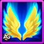
4 — Ascension
In-game description: After death, Markus becomes a spirit and continues using his skills without gaining Energy. He absorbs 50% of the damage taken by allies until reaching the absorption limit, then disappears. While this skill is active, Markus cannot be targeted by skills or attacks.

Skill Explanation: After Markus dies, his spirit keeps using skills and absorbs 50% of the damage taken by allies until its reserve is spent. The reserve replaces a fixed lifetime: greater incoming damage can consume it sooner. The spirit cannot be targeted and gains no Energy, so do not plan around a repeating cycle of newly charged ultimates.
Formula with Talisman of Compassion
- Maximum absorbed damage: 50% Health + 300000 (1,254,990 × 0.5 + 300,000 = 927,495).
- Damage absorption: 50% of damage taken by allies, until the reserve is exhausted.
Formula with Talisman of Salvation
- Maximum absorbed damage: 50% Health + 300000 (1,174,990 × 0.5 + 300,000 = 887,495).
- Damage absorption: 50% of damage taken by allies, until the reserve is exhausted.
Skill Animation Info
- Skill level: 80
- Animation Delay: 0.5 seconds
- Type: Passive, Damage Absorption
- Trigger: On Markus's death
Upgrade Priority: Very High — This is the defining team-protection mechanic of his rework. Keep it upgraded alongside Divine Protection and invest in Health to expand its reserve. Do not treat death as your goal: living Markus still provides useful casts.
Markus Tank Class Ability
Every 10 seconds, increases the Armor and Magic Defense of the ally with the lowest Health percentage for 5 seconds. Can target Markus himself. The bonus depends on Markus's maximum Health.
At class ability level 45 and overall class level 585, the formula is 1% Health + 29250, applied to both Armor and Magic Defense:
- Compassion: (1,254,990 × 0.01 + 29,250 = 41,799.90).
- Salvation: (1,174,990 × 0.01 + 29,250 = 40,999.90).
This is another reason I value Health: it strengthens Markus's protection before death as well as Ascension afterward. The class ability selects the lowest Health percentage; keep that wording distinct from Divine Protection's lowest-Health target description.
Best Skin for Markus: Skin Priority and Upgrade Order
Find the best skin for Markus with a clear upgrade order that balances Health, Strength, Armor, and Physical Attack for his reworked tank role.
Suggested skin order: Nordic → Default → Barbarian → Winter / Stellar. Move Armor earlier if physical damage is the immediate problem. All five skins use Strength Skin Stones; no Skin+ is included, and unlocked skin bonuses remain active regardless of the appearance equipped.
Default Skin
Level 60 Bonus: Strength +1,365.
Evolution Priority: High — Strength +1,365 also grants 54,600 Health and 1,365 Physical Attack. I put it second after Nordic: it combines durability, a larger spirit reserve, and stronger attack-scaling skills.
Nordic Skin
Level 60 Bonus: Health +106,645.
Evolution Priority: Very High — My first general tank investment. Health +106,645 adds 53,322.5 to Ascension's reserve and 1,066.45 to each defense granted by the class ability.
Barbarian Skin
Level 60 Bonus: Armor +10,650.
Evolution Priority: High — My third general choice, or earlier against heavy physical pressure. Armor improves physical durability but does not directly scale the absorption reserve or healing.
Winter Skin
Level 60 Bonus: Physical Attack +7,095.
Evolution Priority: Medium — Upgrade after the defensive core. Physical Attack +7,095 adds 10,642.5 to the ultimate heal, 5,321.25 to ray damage, and 7,095 to Compassion damage.
Stellar Skin
Level 60 Bonus: Physical Attack +7,095.
Evolution Priority: Medium — The same +7,095 Physical Attack as Winter gives the same formula gains. They are tied in battle value; prioritize whichever you already own or have upgraded.
Markus Artifact Evolution Priority
Plan Markus's artifact priority around survival, stronger healing, and team protection, while keeping the weapon, book, and ring in game order.
Default investment order: Ring → Book → Weapon. Move the weapon earlier when enemy magic damage threatens the entire team. The maximum values below are for level 100, six-star artifacts.
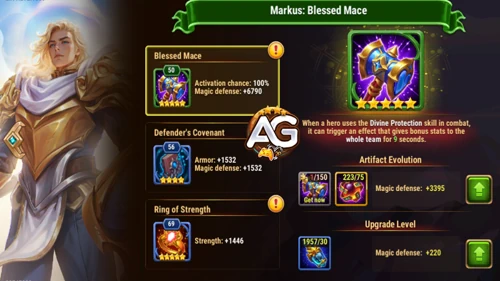
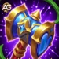
1 — Weapon: Blessed Mace
Evolution Priority: Medium-High — The ultimate Divine Protection triggers a team Magic Defense buff for nine seconds. At six stars, activation chance is 100% and the bonus is +32,040. This is a temporary team effect, excluded from the permanent stats table. It can be your first artifact priority against team-wide magic pressure.
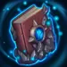
2 — Book: Defender's Covenant
Evolution Priority: High — Armor +8,010 and Magic Defense +8,010 provide permanent protection. I usually build this after the ring so Markus can remain alive and keep casting.

3 — Ring: Ring of Strength
Evolution Priority: Very High — Strength +3,990 grants 159,600 Health and 3,990 Physical Attack. That Health alone adds 79,800 to the Ascension reserve and 1,596 to each defense from the class ability, while the attack improves healing and damage.
Markus Glyph Evolution Priority
Use this Markus glyph priority to build a durable tank, then improve his attack-scaling skills, with each glyph displayed in its in-game order.
Default upgrade order: Health → Strength → Armor → Magic Defense → Physical Attack. Swap the two defenses when magic pressure is the bigger threat. The numbers below are level 80 bonuses.

1 — Physical Attack
Level 80 Stats: Physical Attack +8,340.
Evolution Priority: Medium — Physical Attack +8,340 adds 12,510 to the ultimate heal, 6,255 to ray damage, and 8,340 to Compassion damage. Useful after Markus can survive; it does not improve the ray's percentage heal.

2 — Health
Level 80 Stats: Health +122,800.
Evolution Priority: Very High — Health +122,800 adds 61,400 to the spirit reserve and 1,228 to each defense from the class ability. My first general investment.

3 — Armor
Level 80 Stats: Armor +12,850.
Evolution Priority: High — Armor +12,850 helps him withstand physical damage. Prioritize it above extra attack when your frontline is dying too quickly.

4 — Magic Defense
Level 80 Stats: Magic Defense +12,850.
Evolution Priority: Medium-High — Magic Defense +12,850 improves survival against magic damage. Move it ahead of Armor if the opponent's damage makes that the better choice.

5 — Strength
Level 80 Stats: Strength +2,110.
Evolution Priority: Very High — Strength +2,110 grants 84,400 Health and 2,110 Physical Attack. I put it second to Health: it adds 42,200 to Ascension's reserve, 844 to the class bonus, and improves attack-scaling casts.
How to Counter Markus in Hero Wars Alliance
I would start by attacking the limits of his kit. These are tactical matchup considerations, not a verified list of heroes that automatically beat him.
- Respect the five-second immunity: if you can control ultimate timing, avoid spending your biggest damage burst into the protected ally. Damage immunity is temporary.
- Pressure allies beyond his local stun: Compassion only reaches the nearest enemies in front. Do not assume it can interrupt every threat to his backline.
- Keep pressure after his death: his spirit is untargetable, but its absorption reserve is finite. Damage against surviving allies consumes that reserve; killing Markus does not immediately remove his protection.
- Read the equipped talisman: Compassion has less Magic Defense; Salvation has less Health and Armor. Match damage pressure to the weaker part of the build.
- Evaluate anti-healing matchups: limiting restored Health would target his healing contribution, but it should not be assumed to remove his damage immunity or spirit absorption. Check the opposing skill's exact wording.
Markus Synergy: Who Benefits from His Protection?
Luther is the partnership I want to revisit. When he jumps into the enemy team, Markus can take over the exposed frontline. Markus's ray can heal affected allies in front of or behind him, and the ultimate can save the lowest-Health ally. That makes a renewed Luther combination worth testing, though positioning and cast timing still determine who receives support.
Allies with Large Health Pools
Retribution Ray restores 20% of the recipient's maximum Health. For the same percentage, a higher-Health ally receives more raw healing. Increasing Markus's Physical Attack does not change that relationship.
Damage Dealers Who Need Time
His heal, immunity window, and spirit absorption can give an ally more time to finish a fight. This is a general fit with his kit, not a faction bonus or a claim that every damage dealer works equally well.
Markus Team Ideas for 2026 - Hero Wars Alliance
These are my two proposed lineups for testing the rework. They are not ranked by measured win rate or presented as confirmed meta teams. The rows retain the suggested back-to-front arrangement; verify actual placement and movement in battle.
Team 1: Eva, Guus, Tristan, Markus, and Luther
This is the first combination I would test: Luther changes the frontline when he jumps, while Markus supplies protection for the remaining formation. Salvation emphasizes his ultimate heal and physical skill damage. Watch whether Markus survives the handoff and whether his protection gives the team time to finish its target.
| Eva | Guus | Tristan | Markus | Luther |
|---|---|---|---|---|
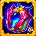 Talisman 1 | 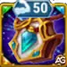 Talisman 1 | Talisman 2 | 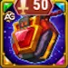 Talisman 2 |
|
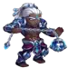 Tristan | Markus |
Team 2: Aidan, Guus, Kayla, Markus, and Luther
This second proposal changes the supporting lineup while retaining Luther and Markus. Keep Salvation as the starting choice, then compare Compassion if frontline survival is the bottleneck. Track who receives Divine Protection and whether the spirit reserve lasts through the decisive damage window.
| Aidan | Guus | Kayla | Markus | Luther |
|---|---|---|---|---|
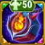 Talisman 2 | 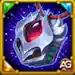 Talisman 2 | Talisman 2 | Talisman 2 | |
| Aidan | Markus |
Alexandre Tips: Compare these teams against the same opponent and change one item at a time. Start with Markus's talisman: if Compassion keeps him alive longer, check whether that extra time outweighs Salvation's stronger heal. Popularity data is not available for these proposals, so I would not label either one a most-used team.
Markus: Alexandre's Final Verdict
In the eight years I have played Hero Wars Alliance, Markus has never been a hero I associated with the meta. I remember his old combination with Luther: Luther jumped, and Markus took the frontline. Over time, that healer version struggled to keep up.
Honestly, most of these changes feel more like a strong buff than a complete reinvention. Ascension is the exception that catches my attention. A spirit with a Health-based absorption limit gives me a concrete reason to build his durability. The idea of a Health-based combat resource reminds me of Corvus's altar, although that comparison does not make their mechanics identical.
I see a much more promising support tank now. My starting priorities are Health and Strength, Compassion for a demanding frontline, and Salvation when I want more healing from the ultimate and more physical damage. I also want to see whether the Luther partnership can work again.
It is still too early for me to call him a meta staple. A future Health Skin+ could be exciting because it would also improve Ascension, but that is my speculation, not an announced release. For now, invest around the protection your own team needs, and let actual battle results decide how far you take him.